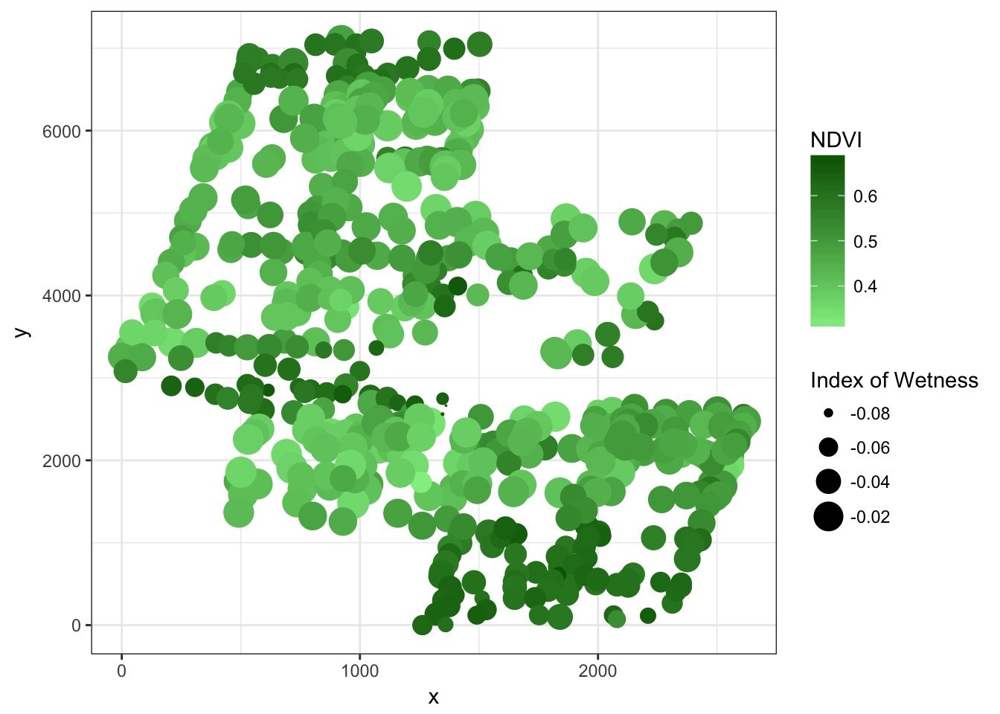
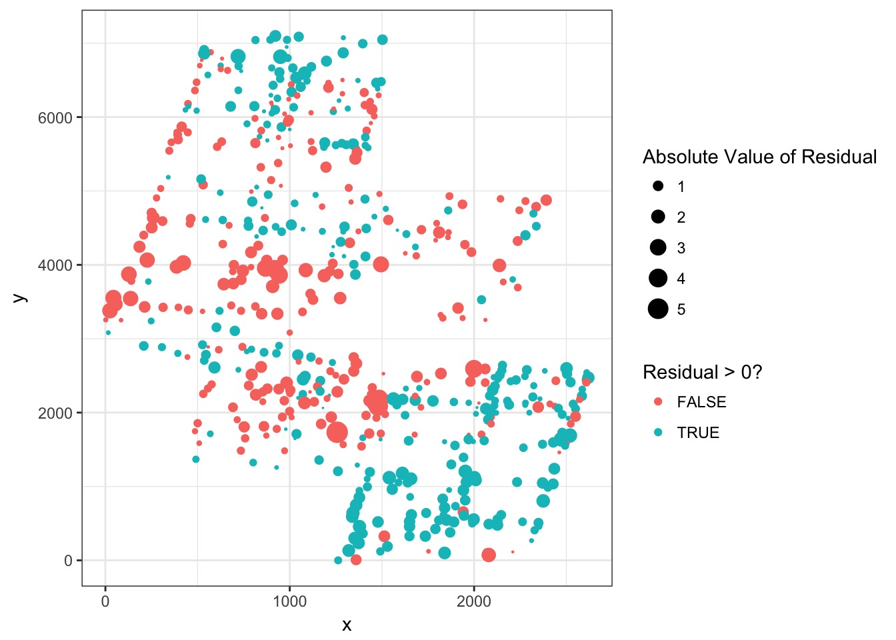
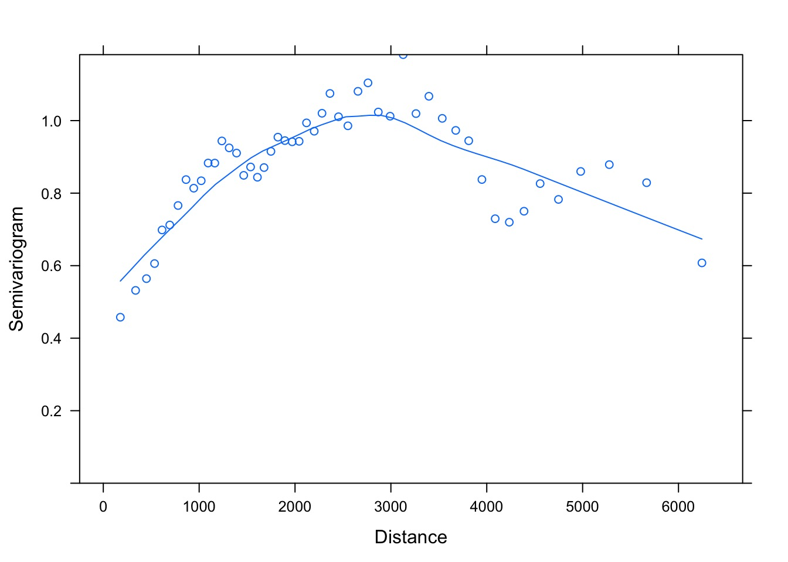
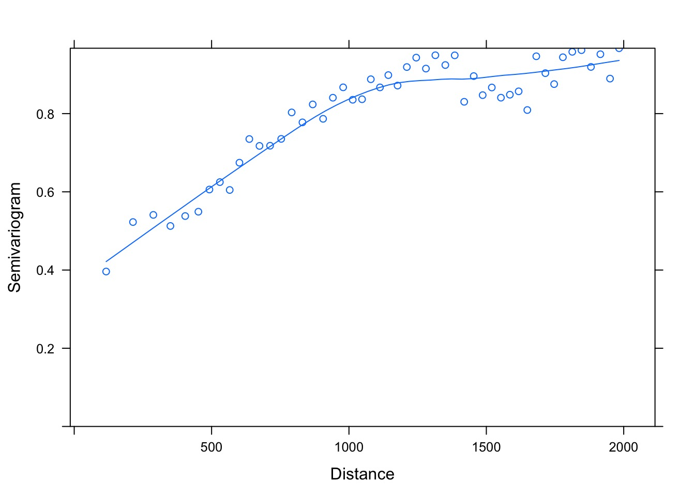
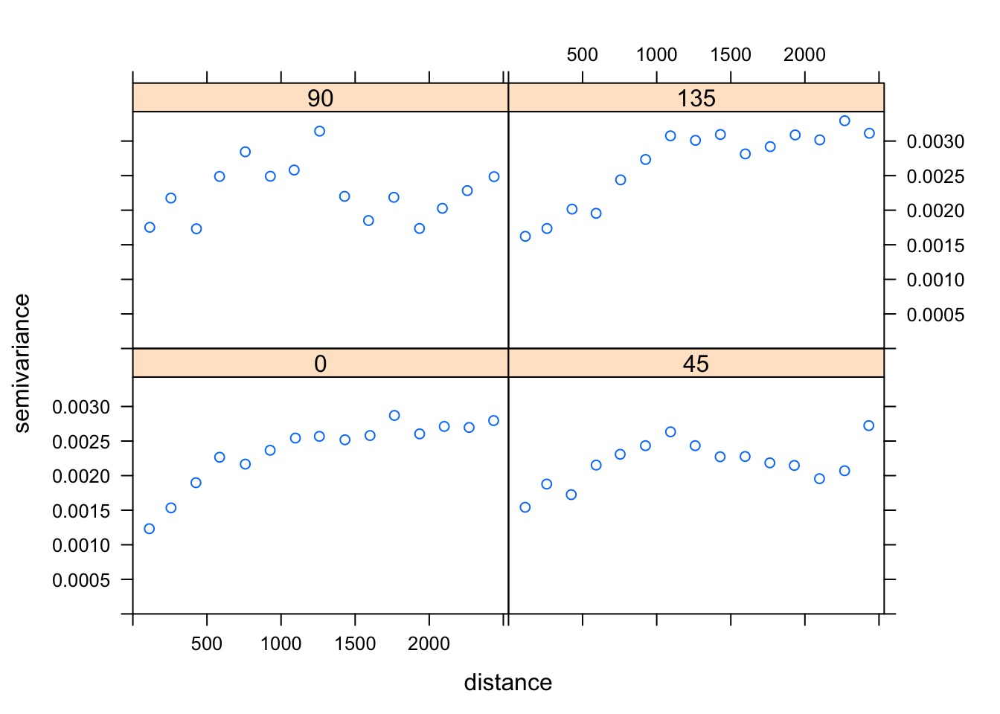
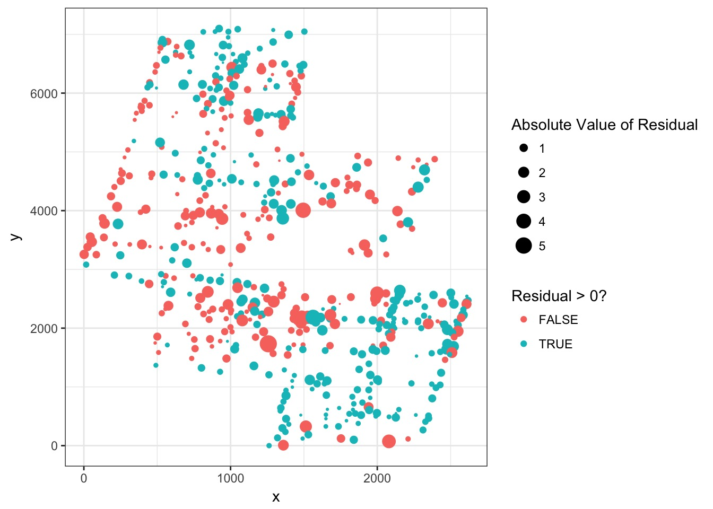
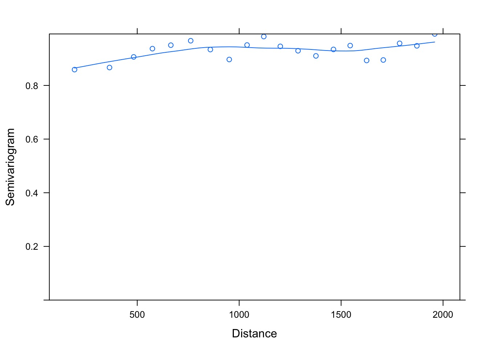

Spatial Autocorrelation with GLS

Much of our data is spatial

Initial Non-Spatial Model
bor_gls <- gls(NDVI ~ Wet,
data=boreal)Spatial Autocorrelation in Residuals Can Be Clear

How do we assess spatial autocorrelation: Variograms

How do we diagnose spatial autocorrelation
- Moran’s I
- Quantitative measure of spatial autocorrelation
- Can use it to correct SE
- Variograms
- Show nature of autocorrelation
- Show how to adjust correlation matrix in GLS
- Show nature of autocorrelation
Spatial Dependence
\[\gamma(x_1, x_2) = \frac{1}{2}\bar{(Z(x_1) - Z(x_2))^2}\]- Describes spatial dependence between two points
- Z is some function - could be residuals, etc
- If no spatial autocorrelation, average value is 0
- But - this is for points that are all equidistant
Dependence for points distance h away from each other
\[\gamma(h) = \frac{1}{2}Var(Z(x+h) - Z(x))\]- Looks at all points a distance h away from focal point
- Looks at variance in similarity
- Software puts a range around h, as in real data, few points exactly h away
Anatomy of a Variogram

The Variogram of Our data
boreal_vg <- Variogram(bor_gls,
form =~ x + y,
robust=T,
nint=50)formdefines spatial variables
robustaids fittingnintis number of h values
The Variogram of Our Data

Adding a max distance between points
boreal_vg <- Variogram(bor_gls,
form =~ x + y,
robust=T,
maxDist=2000,
nint=50)The Variogram of Our Data

Should evaluate directionality
library(gstat)
newdata <- data.frame(r = residuals(bor_gls),
x=boreal$x, y=boreal$y)
boreal_vg_dir <- variogram(r~1,
locations = ~ x + y,
data=newdata,
alpha=c(0,45,90, 135))We are all good

So - correlation structures
- Exponential correlation using the function
corExp
- Gaussian correlation using the function
corGaus
- Linear correlation using the function
corLin
- Rational quadratic correlation using the function
corRatio
- Spherical correlation using the function
corSpher
How do you tell the difference?
- Biology
- Fit all structures and evaluate
- Visual examination of variogram shape
Different Shapes of Autocorrelation

So, which is it?
A Simple Exponential Correlation
spaceCor <- corExp(form =~ x+y, nugget=T)Model Fit
bor_gls_space <- gls(NDVI ~ Wet,
data=boreal,
correlation=spaceCor)Problem is now much less severe

Problem is now much less severe

Range and nugget are estimate
Generalized least squares fit by REML
Model: NDVI ~ Wet
Data: boreal
Log-restricted-likelihood: 984.1436
Coefficients:
(Intercept) Wet
0.379634 -3.302215
Correlation Structure: Exponential spatial correlation
Formula: ~x + y
Parameter estimate(s):
range nugget
454.8220361 0.1342511
Degrees of freedom: 533 total; 531 residual
Residual standard error: 0.05819316 Comparison of Models
AIC(bor_gls, bor_gls_space) df AIC
bor_gls 3 -1646.583
bor_gls_space 5 -1958.287Difference in SE and Coefficients
No Correction
| Value | Std.Error | t-value | p-value | |
|---|---|---|---|---|
| (Intercept) | 0.3273056 | 0.0055172 | 59.32491 | 0 |
| Wet | -4.8843829 | 0.1544074 | -31.63308 | 0 |
Correction
| Value | Std.Error | t-value | p-value | |
|---|---|---|---|---|
| (Intercept) | 0.379634 | 0.0141639 | 26.80288 | 0 |
| Wet | -3.302215 | 0.1690031 | -19.53937 | 0 |
A note on Time
- We are specifying 2D spatial correlations
- But, we can use these for 1D temporal correlations
- Can use different functional forms of shape of temporal correlation
- Not typical, but potentially useful depending on biology
Example
- Irish forest data
- Goal is to model lake Ph
- Possible influences:
- Sodium Dominance Index (SDI)
- Status as forested or not
- Altitude
- Sodium Dominance Index (SDI)
- Spatial autocorrelation possible